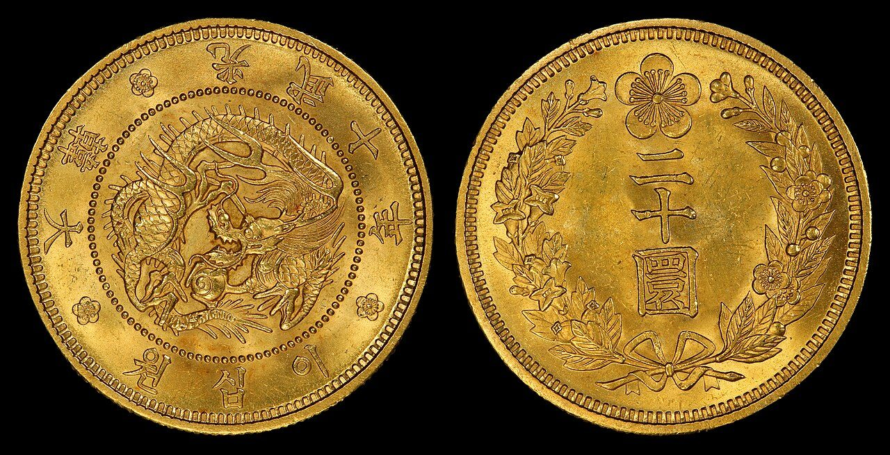
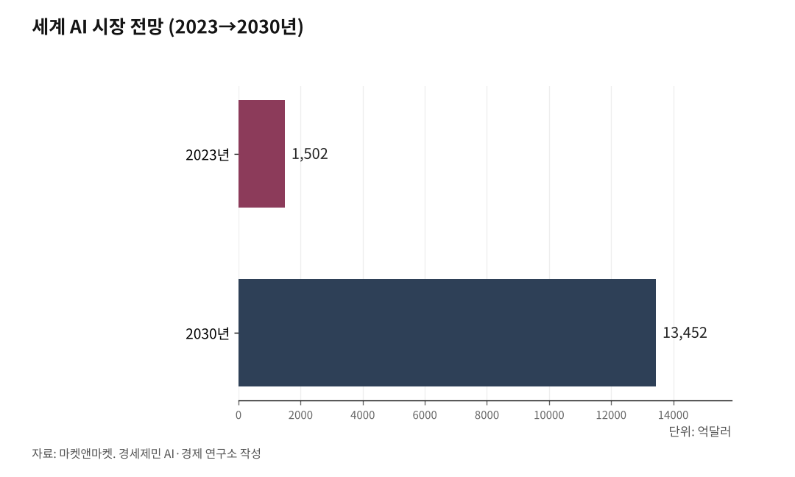

[코스피 9000 번외]
전쟁도 멈춰 세운 주식, 삼성전자를 국민전자로
트럼프조차 군사 결정 앞에서 증시를 본다
인공지능이 여는 시장이 젠슨 황을 한국으로 부른다
골드만삭스도 모건스탠리도 한국 증시는 여전히 싸다고 말한다
[사진①] 6월 1일 대만 타이베이에서 기조연설하는 젠슨 황 엔비디아 최고경영자.

트럼프 미국 대통령이 2026년 2월 28일 이란을 공습해 전쟁을 열었다. 그는 전쟁을 끝내지도 더 밀어붙이지도 못한 채 6월에도 휴전 협상만 거듭한다. 그를 붙잡아 둔 것이 무엇인지 들여다보면 뜻밖에도 주식이 나온다.
1. 트럼프를 멈춰 세운 건 주식이었다
미국과 이스라엘은 2월 28일 이란 핵시설을 기습 공습해 최고지도자 알리 하메네이를 비롯한 수뇌부를 살해했고, 이란은 호르무즈 해협을 봉쇄하며 맞섰다. 공습 직후 유가가 치솟고 주가가 급락하자, 트럼프는 곧바로 전쟁이 거의 끝났다고 발표해 증시를 끌어올린 뒤 다시 말을 바꿨다.
뉴욕타임스는 3월 11일 기사에서 트럼프가 전쟁을 지휘하면서 금융시장을 가장 먼저 의식한다고 짚었다. 관세를 올렸다가 주가가 빠지자 물러섰던 그 패턴이 전쟁에서도 되풀이됐다.
6월에도 같은 자리다. 미국과 이란이 호르무즈 재개방과 60일 휴전을 담은 양해각서를 놓고 벌이는 협상은 임박과 교착을 오가는데, 트럼프는 위대한 합의가 되거나 결렬되면 더 큰 공격을 하겠다며 양쪽을 오간다. 증시가 최강대국 최고권력자의 군사 결정까지 붙잡아 둔 셈이다.

2. 전쟁도 못 이긴 주식, 과실은 비켜갔다
전쟁이 터지자 미국 스탠더드앤드푸어스500지수는 초반 8% 빠졌다가 19% 뛰어 사상 최고를 회복했다. 트럼프는 5월 27일 내각회의에서 국민 노후자금이 불어났다고 자랑했다.
그러나 그 과실은 고르게 퍼지지 않았다. 미국 국내총소득에서 노동이 가져가는 몫은 집계 79년 만에 가장 낮은 51%로 내려앉았고, 미국 주식의 약 90%는 상위 10%의 손에 있다.
자산을 가진 쪽은 더 불어났지만, 못 가진 쪽은 오른 유가와 물가에 쪼들렸다. 무디스는 전쟁 뒤 미국 가구가 에너지에 평균 447달러(약 62만원)를 더 쓴다고 봤고, 뉴욕 연방준비은행 조사를 보면 연소득 4만달러(약 5500만원) 아래 가구는 휘발유 소비를 10% 줄였지만 12만5000달러(약 1억7000만원) 위 가구는 운전을 그대로 이어갔다.
한국도 다르지 않다. 코스피는 6월 1일 8788.38로 사상 최고를 썼지만 그날 오른 종목은 179개, 내린 종목은 732개로 다섯 중 넷이 빠졌다. 가계금융복지조사를 보면 자산 상위 10%가 순자산의 46.1%를 쥐었고, 순자산 지니계수는 0.625다.
지수와 살림은 따로 움직였다. 한국에서도 4월 취업자 증가폭이 16개월 만에 가장 적었고, 청년 고용률은 24개월째 내렸다.
[사진②] 젠슨 황이 공개한 휴머노이드 로봇과 자율주행 시연 화면.
3. 인공지능이 여는 시장, 얼마나 큰가
증시를 끌어올린 힘의 한가운데 인공지능이 있다. 시장조사기관 마켓앤마켓은 세계 인공지능 시장이 2023년 1502억달러(약 200조원)에서 2030년 1조3452억달러(약 1800조원)로 해마다 36.8%씩 큰다고 봤다.
쓰임새도 빠르게 넓어진다. 카운터포인트리서치는 생성형 인공지능에 쓰는 소비자 지출이 2030년 6990억달러(약 1018조원)에 이르고 챗봇 이용자가 50억명을 넘는다고 전망했다. 기기 자체에서 인공지능을 돌리는 온디바이스 반도체 시장만 따로 봐도 2030년 1033억달러(약 142조원)로 커진다.
인공지능이 모델을 만드는 학습에서 실제 서비스를 돌리는 추론으로 넘어가며 수요의 결도 바뀐다. 시장조사기관 카날리스는 인공지능을 처리하는 PC 비중이 2024년 18%에서 2028년 70%로 올라 2억5000만대에 이른다고 봤다.
흐름은 화면 속을 넘어 물리 세계로 번진다. 젠슨 황 엔비디아 최고경영자는 6월 1일 대만에서 로봇과 자율주행에 지능을 입히는 피지컬 AI(physical AI)를 10월부터 산업 현장에 들이겠다고 선언했고, 골드만삭스는 휴머노이드 로봇 시장이 2035년 380억달러(약 52조원)에 이른다고 전망했다.
수요가 데이터센터 한 곳에 머물지 않고 온디바이스와 로봇, 자율주행, 차량으로 갈래가 넓어지면서, 세계 반도체 시장은 올해 1조달러(약 1380조원)를 넘어선다. 한국수출입은행은 그 안에서 메모리 비중이 30%대에서 50%로 올라선다고 봤다. 당초 2030년으로 보던 1조달러 돌파가 그만큼 앞당겨졌다.
4. 그래서 젠슨 황이 한국으로 온다
이 시장의 승부처가 연산에서 메모리로 옮겨간다. 고대역폭 메모리(HBM)의 아버지로 불리는 김정호 카이스트 교수는 그래픽처리장치(GPU)의 혁신이 한계에 다다랐고, 인공지능이 영상과 영화를 실시간으로 만드는 단계로 가면 메모리 용량이 지금의 1000배까지 필요하다고 봤다.
그가 보기에 속도를 맡는 HBM과 용량을 맡는 고대역폭 플래시(HBF)를 모두 만들 수 있는 곳은 삼성전자와 SK하이닉스뿐이다. 박태웅 녹서포럼 의장도 한국이 반도체부터 가전과 자동차와 조선까지 제조 풀라인업을 갖춰 피지컬 AI에서 앞설 수 있다고 짚었다.
젠슨 황의 행보가 그 판단을 뒷받침한다. 엔비디아는 단일 국가로는 이례적으로 한국에 GPU 26만장을 주기로 했고, 차세대 플랫폼 루빈에 들어갈 HBM4 물량의 약 70%를 SK하이닉스가 맡는다.
젠슨 황은 대만에서 한국에 훌륭한 생태계와 기술력 있는 기업이 많아 투자를 늘 고려한다고 말했다. 그가 공개한 로봇 두뇌 코스모스와 휴머노이드 플랫폼 아이작 그루트는 10월부터 공장에 들어간다. 엔비디아는 현대차와 자율주행 로보택시 상용화도 함께 추진한다.
엔비디아는 6월 1일 대만에서 한국 기업만 따로 부르는 만찬을 열었고, 젠슨 황은 5일 한국을 찾아 기업 총수들과 만난다. 그가 한국으로 오는 행보 자체가 한국이 길목이라는 증거다.
5. 골드만삭스도 모건스탠리도 싸다고 한다
한국 증시를 보는 바깥의 눈도 달라졌다. 골드만삭스는 6월 초 한국 증시가 세계에서 가장 놀라운 랠리를 보였는데도 여전히 매력적이라며 코리아 디스카운트가 점차 줄어든다고 봤고, 모건스탠리는 코스피를 6500에서 9500, 강세장에서는 1만까지 내다봤다. 코스피 시가총액은 6월 2일 인도를 제치고 세계 6위에 올라서, 올해 들어 캐나다와 영국, 프랑스를 차례로 따돌렸다.
코스피 5000을 꿈의 지수라 부르던 두 곳이 1만을 말하는 데는 까닭이 있다. 앞으로 벌 이익으로 잰 코스피 선행 주가수익비율은 8.24배로 미국 스탠더드앤드푸어스500지수의 22.17배 절반에도 못 미치는데, 한국 반도체는 실적이 세계 최고 수준인데도 몸값이 가장 눌려 있어서다. 빙산이 온다던 모건스탠리가 다섯 달 만에 낙관으로 돌아선 것도 이 실적 앞에서다.
다만 저평가가 다 풀린 것은 아니다. 한국거래소를 보면 코스피 주가순자산비율(PBR)은 5월 22일 2.40배로 1년 전 0.88배에서 크게 올랐지만, 상장사 열 곳 중 여섯은 아직 주가가 장부가치를 밑돌고, 한국 주식은 해외보다 여전히 30~60% 싸다.
상법 개정과 밸류업 정책이 이 격차를 줄이는 중이다. 금융위원회는 밸류업을 도입한 두 해 만에 상장사 주가순자산비율이 오르고 한 해 주주환원이 92조원을 넘어섰다고 밝혔다. 이재명 정부가 코리아 디스카운트 해소를 국정과제로 내걸고 지배구조를 겨눈 상법 개정을 밀어붙인 결과다.
6. 열 개 잣대로 재본 삼성전자
삼성전자는 6월 2일 36만500원에 거래를 마쳐 52주 최고에 다가섰다. 시가총액은 2107조원으로 코스피 1위이자 단일 종목 가운데 처음 2000조를 넘긴 자리다. 열 가지 잣대로 재면 결이 또렷하다.
지난 1년 이익으로 잰 주가수익비율(PER)은 29.14배로 싸 보이지 않지만, 폭증할 올해 이익을 반영한 선행 PER은 8.36배로 내려간다. 자기자본이익률(ROE)이 19.16%, 영업이익률이 42.75%, 부채비율이 30.15%에 당좌비율이 205.56%로 재무도 단단하고, 1분기 매출은 133조8734억원으로 한 해 전보다 69% 늘었고 영업이익은 57조2328억원에 이른다.
빚까지 포함해 잰 기업가치 배수는 5배 안팎이고, 회사가 손에 쥐는 현금도 넉넉해 상반기에만 16조원어치 자사주를 사들여 없앤다. 배당성향이 25.10%여서 줄어들 위험도 낮다. 열 칸 가운데 아홉이 싸거나 우량하다고 가리킨다.
한 칸은 다른 말을 한다. 자산으로 잰 주가순자산비율은 5.01배로 무거운데, 반도체가 기술과 미래 이익으로 값이 매겨지는 업종임을 감안해도 자산 기준으로는 싸지 않다.
삼성전자가 손을 놓은 것도 아니다. HBM 점유율이 18%로 SK하이닉스 61%에 뒤지지만, 6세대 HBM4를 업계에서 처음 양산했고 6월 2일 8세대 HBM5 실물모형을 공개했다. 싸다 비싸다를 가리는 일은 여기까지이고, 사고 마는 것은 읽는 사람의 몫이다.
7. 국민전자라는 말
문제는 그 과실이 어디로 흐르느냐다. 한국은행을 보면 가계대출의 61.4%가 주택담보대출로, 시민의 돈은 새로 만들어지지 않는 땅에 묶여 불로소득을 좇는다.
같은 돈이 생산하는 기업의 주식으로 가면 자리가 달라진다. 노동소득만으로는 자산이 불어나는 속도를 따라가기 어려운 시대에, 시민이 우량 기업의 주주가 되면 성장의 과실에 함께 올라탈 길이 열린다. 정부가 추진하는 국민성장펀드도 5년간 150조원 가운데 일부를 서민 몫으로 떼어 그 길을 넓힌다.
다만 빛만 있는 것은 아니다. 국회예산정책처는 반도체에 쏠린 성장이 고용과 내수로 이어지지 않으면 양극화가 깊어진다고 경고했는데, 반도체 생산의 변동성이 다른 제조업의 3배에 이른다. 호황의 열매가 다시 자산을 가진 소수에게만 쌓인다면 시민을 비켜 간 그 구조는 그대로 남는다.
전쟁마저 멈춰 세운 주식이 끝내 누구의 것이 될지가 여기 달렸다. 그 답은 아직 시민의 손 밖에 있다.
※ 이 기사는 인공지능 프로그램 클로드 오푸스 4.8을 활용해 작성했다. 본 기사는 투자 참고자료이며 최종 투자 판단과 책임은 투자자 본인에게 있다. 자본시장과 금융투자업에 관한 법률상 투자자문이나 투자권유에 해당하지 않는다.
참고문헌
· 삼성전자 투자지표(PER·PBR·ROE 등), 한국거래소 정보데이터시스템, 2026.6.2. 종가 기준.
· "Trump Directs War With the Markets Top of Mind", 뉴욕타임스, 2026.3.11., https://www.nytimes.com/2026/03/11/business/economy/trump-iran-markets-economy.html
· "이란 전쟁, 미국에 불평등의 새 시대 열었다", 파이낸셜뉴스, 2026.5.31., https://www.fnnews.com/news/202605310350064053
· "2025년 가계금융복지조사 결과", 통계청·한국은행·금융감독원, 2025.12.4.
· "2026년 4월 고용동향", 국가데이터처, 2026.5.13.
· "글로벌 인공지능 시장 전망(2030년까지)", 마켓앤마켓, 2023.
· "글로벌 AI 소비자 지출 전망(2024~2030)", 카운터포인트리서치, 2025.12.24.
· "AI 지원 PC의 현재와 미래", 카날리스, 2024.
· 휴머노이드 로봇 시장 전망, 골드만삭스, 2024.
· 반도체 시장 1조달러 돌파 전망, 한국수출입은행 ICT 산업 동향, 2026.5.
· "'HBM의 아버지' 김정호 교수, 2038년 HBF 시장이 HBM 넘을 것", 전자신문, 2026.2.3.
· "모건스탠리, 올해 코스피 상단 9500 제시", 파이낸셜뉴스, 2026.5.13., https://www.fnnews.com/news/202605131506166199
· "대형주 쏠림의 그림자, 코스피 64% 여전히 저평가", 파이낸셜뉴스, 2026.5.24., https://www.fnnews.com/news/202605241809307640
· "한국 증시 시총, 인도 제치고 세계 6위", 헤럴드경제, 2026.6.2.
· "삼성전자 상반기 16조 자사주 소각 예정", 인베스트조선, 2026.3.10.
· "가계대출 용도별 잔액 및 비중", 한국은행, 2024년 2분기.
· "AI로 읽는 경제, 반도체 질주 속 제조업 양극화", 국회예산정책처 분석, 뉴스핌, 2026.5.21.
사진 출처
· [대표사진] National Museum of American History, "Korea 1907 20 Won.jpg", 위키미디어 공용, 퍼블릭 도메인, https://commons.wikimedia.org/wiki/File:Korea_1907_20_Won.jpg
※ 이 브리핑은 인공지능을 활용해 작성했습니다.
관련기사
저작권자 © AI경세제민 무단전재 및 재배포, AI학습 및 활용 금지